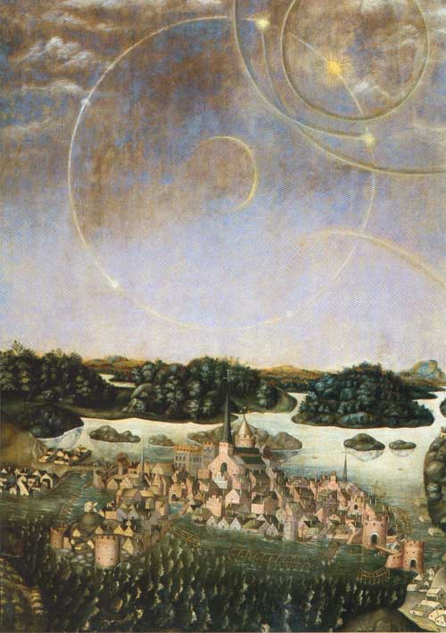

Avril

Le "tableau des lumières" d'Urban Malare (Urbain le Peintre, 1510-1586). Les trajectoires des objets
furent d'abord reproduites par Jacob Matham sur une plaque de cuivre retraçant l'observation du 20
À Stockholm (Suède) 5 "soleils" apparaissent pendant plusieurs h
au-dessus de la ville, effrayant la population. Olaus Petri (1493-1552, théologien et mathématicien, notable de
la ville) en fait faire un tableau, le Vädersolstavlan. L'événement aura des conséquences politiques :
Olaus Petri en fera un présage et lancera des attaques directes contre le roi Gustave Vasa. Une explication de
halo ou parhélie a été avancée Böstrom, Kjell: J. Matham and the parhelia over Stockholm, pp. 15, 113 < Piens, C. & Scornaux, J.: A la recherche des ovnis, 1977, p. 175.